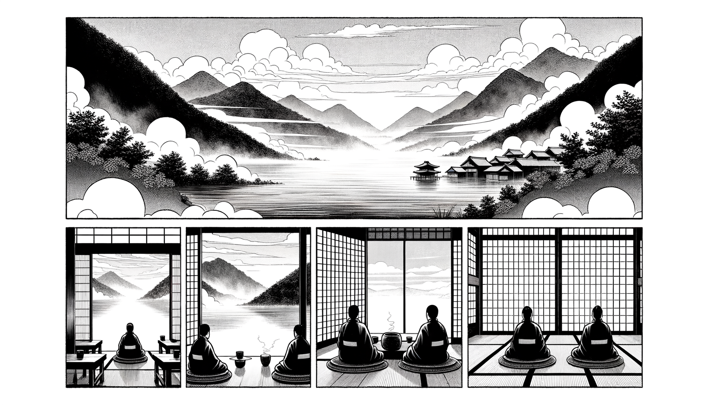

七十五巻 巻一覧
正法眼藏第58 眼睛
本ページは各巻の紹介ページです。tools/gen_web_volumes.py が doc/正法眼蔵.txt から要点の短い抜粋を載せています（全文の引用ではありません）。
出典（原文）: https://shomonji.or.jp/zazen/doc/genzou.html
原文・現代語訳の全文は 全文ページを参照してください。
この巻の紹介（概要）
道元『正法眼蔵』七十五巻の第58篇「眼睛」です。禅籍・経典への引用や語の行間が重なりやすいので、一度ですべてを要約に還元しない読み方を推奨します。問答 Bot では巻スコープにこの題名を含めると応答が安定しやすいことがあります。
語彙の足場
- 題名語：巻題「眼睛」は、道元が本章で特に扱う論点の看板です。辞書義だけに固定せず、原文中の用例で意味を確かめます。
- 引用と典故：公案・経文の引用は、一字一句の照応（何に答えているか）を押さえると全体が見えやすくなります。
- 学び方：抜粋だけでも音読し、分からない箇所は印を付けて後から問うとよいです。
原文（要点の抜粋）
当巻の冒頭付近からの短い抜粋です。長い引用は載せていません。全文は全文ページを参照してください。出典はリポジトリ内 doc/正法眼蔵.txt です。原文の参照元: https://shomonji.or.jp/zazen/doc/genzou.html
億千萬劫の參學を拈來して團圝せしむるは、八萬四千の眼睛なり。
先師天童古佛、住瑞巖時、上堂示衆云、秋風淸、秋月明。大地山河露眼睛。瑞巖點瞎重相見。棒喝交馳驗衲僧（先師天童古佛、瑞巖に住せし時、上堂の示衆に云く、秋風淸く、秋月明らかなり。大地山河露眼睛なり。瑞巖點瞎して重ねて相見す。棒喝交馳して衲僧を驗す）。
いま衲僧を驗すといふは、古佛なりやと驗するなり。その要機は、棒喝の交馳せしむるなり、これを點瞎とす。恁麼の見成活計は眼睛なり。山河大地、これ眼睛裏の朕兆不打なり。秋風淸なり、一老なり。秋月明なり、一不老なり。秋風淸なる、四大海も比すべきにあらず。秋月明なる、千日月よりもあきらかなり。淸明は眼睛なる山河大地なり。衲僧は佛祖なり。大悟をえらばず、不悟をえらばず、朕兆前後をえらばず、眼睛なるは佛祖なり。驗は眼睛露なり。瞎現成なり、活眼睛なり。相見は相逢なり。相逢相見は眼頭尖なり、眼睛霹靂なり。おほよそ渾身はおほきに、渾眼はちひさかるべしとおもふことなかれ。往往に老老大大なりとおもふも、渾身大なり、渾眼小なりと解會せり。これ未具眼睛のゆゑなり。
洞山悟本大師、在雲巖會時、遇雲巖作鞋次、師白雲巖曰、就和尚乞眼睛（洞山悟本大師、雲巖の會に在りし時、雲巖の作鞋に遇ふ次でに、師、雲巖に白して曰く、和尚に就いて眼睛を乞はん）。
雲巖曰、汝底與阿誰去也（汝底を阿誰にか與へ去るや）。
師曰、某甲無（某甲無し）。
雲巖曰、有汝向什麼處著（有らば汝什麼處に向つてか著せん）。
師無語。
雲巖曰、乞眼睛底、是眼睛否（乞眼睛底、是れ眼睛なりや否や）。
師曰、非眼睛。
雲巖咄之（雲巖之を咄す）。
しかあればすなはち、全彰の參學は乞眼睛なり。雲堂に辨道し、法堂に上參し、寢堂に入室する、乞眼睛なり。おほよそ隨衆參去、隨衆參來、おのれづからの乞眼睛なり。眼睛は自己にあらず、他己にあらざる道理あきらかなり。
図解（4コマ・AI生成）
教義の根拠は原文・出典に従い、漫画は比喩の補助に留めてください。

深掘り（読解のコツ）
- 道元文は定義の羅列に見えても、多くの場合誤解への遮断と正伝の姿勢が背骨になっています。
- 「当体」「現成」「即」などの語が出たら、その巻独自の差別相にどう接続しているかをメモしておくとよいです。